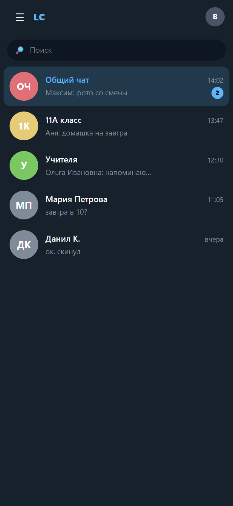
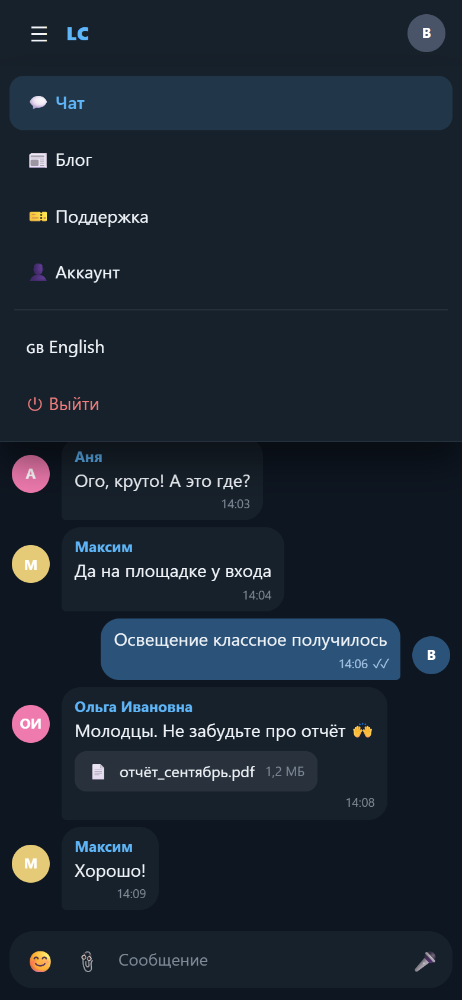

Вариант 5 на телефоне
Мессенджер из варианта 4 + верхняя панель как в 1 и 2. Три состояния: список чатов → открытый чат → меню.

1. Список чатов

2. Открытый чат

3. Меню (☰)
Открыть живой макет на самом телефоне можно, сузив окно браузера до ширины телефона (Ctrl+Shift+M в Chrome/Edge → выбрать телефон) — вёрстка и меню работают как на реальном устройстве.